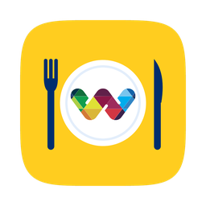

La appThe app
Capturas de la ficha del App Store, con datos ficticios.Screenshots from the App Store listing, with fictional data.



Caso de estudioCase study
Pedidos anticipados para la cafetería del Colegio Walden Dos: una app de iPad e iPhone para alumnos y profesores, un panel web para Caja, Cocina y Administración, y un backend que garantiza que el dinero siempre cuadre. Pre-ordering for the Colegio Walden Dos cafeteria: an iPad and iPhone app for students and teachers, a web dashboard for Cashier, Kitchen, and Admin, and a backend that guarantees the money always adds up.
Uso interno: solo se entra con cuenta del colegio. Internal use: sign-in requires a school account.
En el receso hay filas largas y poco tiempo. Con pedidos anticipados, cada alumno elige su comida antes y la recoge con un código. Pero en cuanto hay saldo de por medio, el sistema tiene que ser correcto aunque dos pedidos lleguen al mismo tiempo, se caiga la red o el reloj del iPad esté mal. Breaks are short and lines are long. With pre-orders, each student picks their food ahead of time and picks it up with a code. But once there's a balance involved, the system has to be correct even when two orders arrive at once, the network drops, or the iPad's clock is wrong.
Toda regla crítica vive en Postgres. Los clientes no tocan tablas: solo llaman funciones que validan rol, cuenta, horario y saldo dentro de una transacción. Every critical rule lives in Postgres. Clients never touch tables: they only call functions that validate role, account, schedule, and balance inside a transaction.
Montos como enteros en centavos, un ledger inmutable (sin UPDATE ni DELETE) y un saldo con CHECK (balance_cents >= 0).Amounts as integer cents, an immutable ledger (no UPDATE or DELETE), and a balance with CHECK (balance_cents >= 0).
Un saldo negativo es imposible por diseño, no por buena suerte.A negative balance is impossible by design, not by luck.
Cada escritura lleva una clave de idempotencia, y una prueba lanza carreras reales con conexiones en paralelo.Every write carries an idempotency key, and a test fires real races over parallel connections.
En el wifi de un colegio, tocar “Pedir” dos veces es lo normal.On school wifi, tapping “Order” twice is the norm.
El corte de 20 minutos se evalúa con la hora del servidor en la zona del colegio; el iPad solo la usa para la cuenta regresiva, con un margen de seguridad.The 20-minute cutoff uses server time in the school's time zone; the iPad only uses it for the countdown, with a safety margin.
Cambiar la hora del iPad no debería servir para pedir tarde.Changing the iPad's clock shouldn't let anyone order late.
Hay que tener cuenta del dominio del colegio, el claim de Google correcto y estar activo en la lista de personas; hooks de Auth bloquean el resto.You need a school-domain account, the right Google claim, and an active entry in the people list; Auth hooks reject everyone else.
Con datos de menores, tener un correo del colegio no basta: hay que seguir en la lista.With minors' data, a school email isn't enough: you have to still be on the list.
Capturas de la ficha del App Store, con datos ficticios.Screenshots from the App Store listing, with fictional data.
¿Quieres ver código? En el portafolio interactivo, Xcode muestra Money.swift y ServerClock.swift sin modificar.
Want to see code? In the interactive portfolio, Xcode shows Money.swift and ServerClock.swift unmodified.